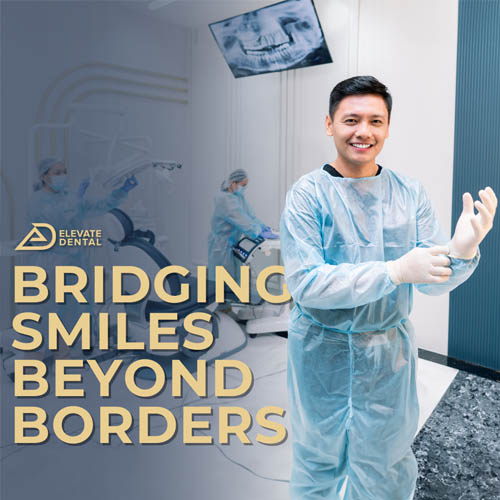

Current Offers
Offers
Only offers that are running right now, each carrying the date it ends.
A discount changes what a treatment costs. It does not change whether that treatment is right for your case.
Offers
Only offers that are running right now, each carrying the date it ends.
A discount changes what a treatment costs. It does not change whether that treatment is right for your case.
A small pinned set sits above the list, chosen for what the offers are worth rather than for what was posted most recently. Today that set holds one.
How this page is filtered, and what it says when nothing matches
Every card carries five values so the toolbar acts on real content rather than shipping inert: its category, its tags, the treatment it applies to, the clinic or clinics it runs at, and the date it ends. The list is sorted by that end date, soonest first, so what expires first sits first.
No current offer matches those filters. Clear one filter to widen the list, or see all current offers. If nothing is running for the treatment you want, the price list carries a starting figure for every treatment.

Cosmetic treatments, 1 August to 31 August 2026.
The offer above is transcribed from the practice's current listing, where it is dated 1 to 31 August 2026, and it has not been reconfirmed with the clinics. Confirm with the practice that it is still running, and that the discounts hold, before you rely on it.
Next
Below is the rule that governs every card on this page, drawn rather than asserted, and the two claim families that are withheld from an offer card until their receipts exist.
The end date is not in the terms, it is on the face of the card, because the end date is the part that decides whether an offer is any use to you.
No bank, card issuer, term, minimum spend threshold or interest rate is published here: card partner and instalment offers carried on the practice's current site have end dates from two years ago and are not confirmed as active this year.
Six visible fields, repeated for every offer that lands.
If none of it applies to you
That is worth saying plainly rather than leaving you to scroll to the bottom of a page that has nothing on it for you.
By treatment
Three routes that need a sentence
One thing to settle before you plan around any of it
Self pay practice. No third party settles the bill
Our specialists will tell you whether that treatment suits your case before anything is booked against it, and what the sequence would be if it does.
That is the order the assessment runs in, and it does not change because a discount is attached to one of the options. A treatment that is wrong for your case does not become right for it at a lower figure.
Elevate Dental does not accept HMO or dental insurance. All treatment is self pay, offers included.
Which is worth knowing before you plan around an offer: the figure on the card is the figure you deal with, and you get the whole plan in writing before anything is scheduled.
One running offer, two held claim families, zero expired entries.
The list is short because the rule is strict. A promotions page that keeps its past on display is not showing you more choice, it is showing you that nobody has looked at it recently.
Tell us which treatment you are considering and we will tell you what your case actually needs, whether or not something is running against it this month.